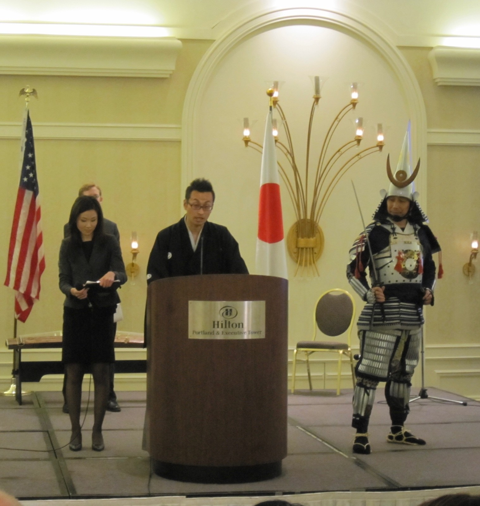
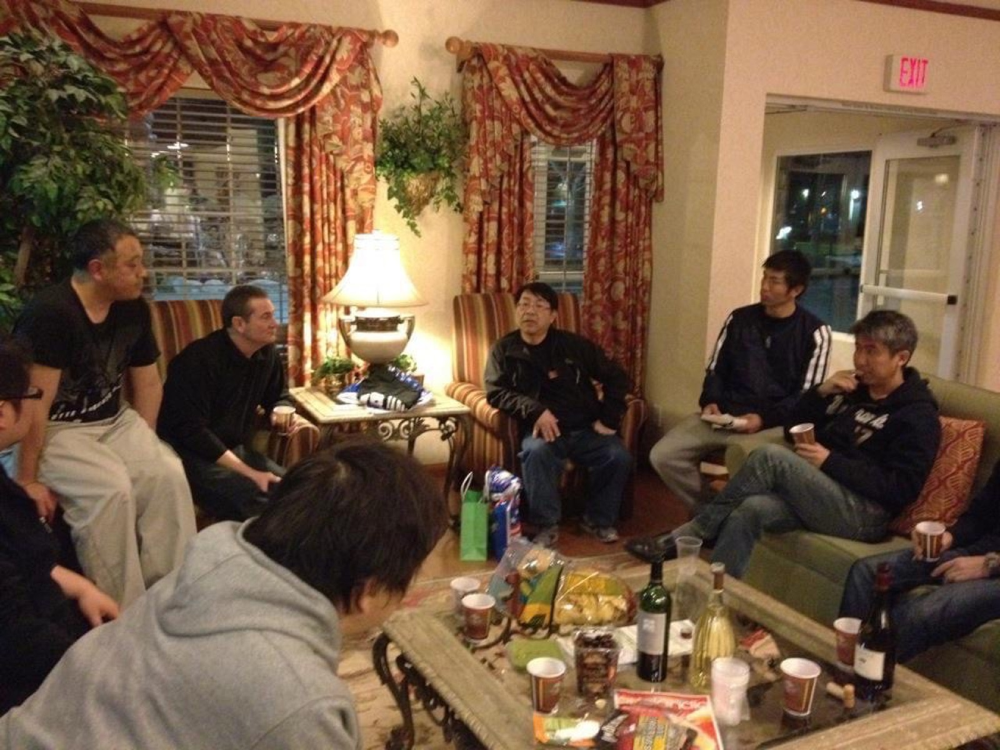
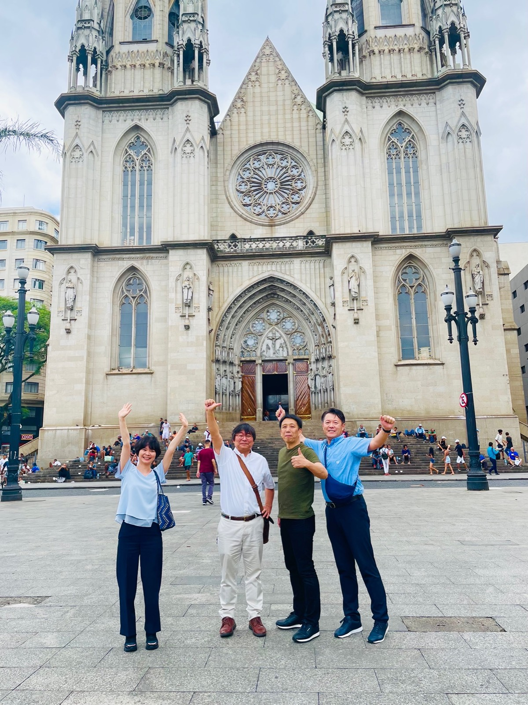

Portland, USA
始まりは、北米・ポートランド。
在ポートランド領事事務所の天皇誕生日祝賀会で、侍の装いによる日本文化と熊本産品の出展を行ったことが始まりでした。日本の商品を、その背景にある文化や物語とともに伝える。現在まで続くARCH PROJECTの原型が、ここで生まれました。

熊本産品の海外PR — ポートランド
越境ビジネスの基盤構築
Hilton Portland — 日米ビジネスイベント登壇
アメリカにてS-line LLCを拠点に、転送サービス・輸出入支援事業を開始。シアトル、ポートランドでの会社設立や業務フロー構築、物流・金融面の実務体制整備に関わり、越境ビジネスの基盤づくりを進める。知事によるトップセールス展示会や総領事館公邸でのイベントを通じ、展示・交流だけで終わらせず、地域産品の輸出実行まで進めてきました。

Hilton Portland — 日米ビジネスイベント登壇
北米ビジネス構築期
個人・企業向け輸入代行・転送サービス展開
個人輸入代行、ビジネス輸入代行、転送サービスを展開。日本企業および個人向けに、海外購買から配送、実務オペレーションまでの流れを整備し、総領事館や現地ネットワークとの連携を通じて物産展や各種イベントにも関与する。

北米ビジネスネットワーキング

北米現地ミーティング
日米連携
太平洋を越えて、クマモト・オイスターの物語をつなぐ。
北米でKumamoto Oysterを生産するTaylor Shellfish Farmsと熊本県をつなぎ、日米双方で大切な種を守るための連携を形にしました。輸出とは、商品を動かすだけではなく、地域の歴史と未来をつなぐ仕事でもあります。
商流形成・日本市場への接続
中国連携期
中国での商品開発、製造、輸入販売に関わり、海外調達から開発、商流形成、日本市場への接続までを実務として経験。現地との連携を重ねながら、事業として成立させるための進め方を積み重ねる。
日本×海外の統合支援へ
チルドレンジャパン設立・統合支援体制の確立
アメリカ、中国、日本国内で培った実務経験をもとに、チルドレンジャパンの事業基盤づくりに関与。海外進出支援、輸出支援、現地リサーチ、販路開拓、会社設立支援などへと領域を広げ、自治体案件、民間企業案件、食品・地域産品・飲食分野を中心に、構想から実行まで一貫して支援する体制を整える。

サンパウロ現地調査・パートナー訪問